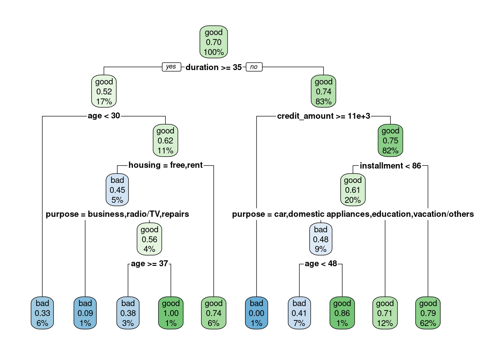
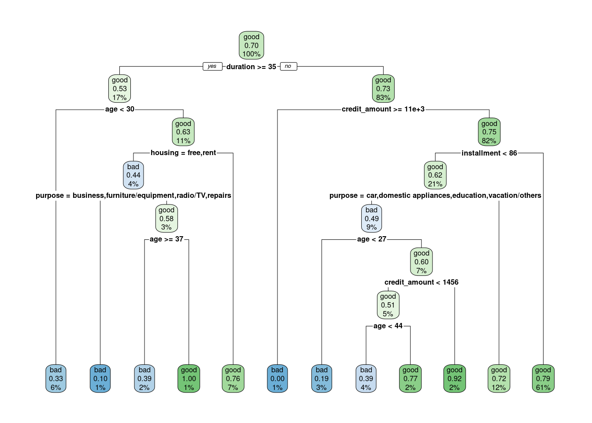
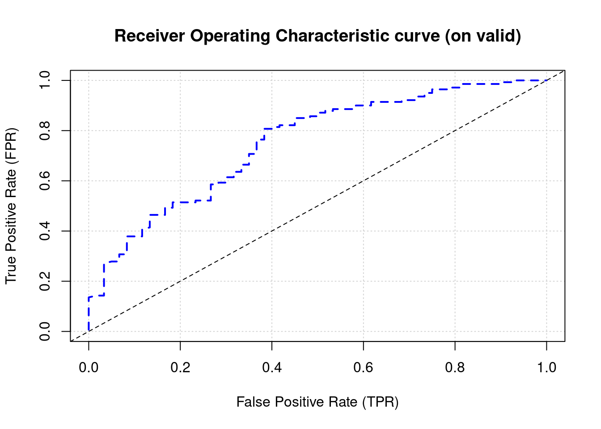

Celem analizy klasyfikacji jest zbudowanie modelu predykcyjnego, który w rezultacie zwróci prawdopodobieństwo przynależności danej obserwacji do jeden z dwóch klas. Przykładowo na podstawie danych o klientach banku można stworzyć model oceny zdolności kredytowej dla nowych klientów. W tym rozdziale posłużymy się German Credit Data do budowy takiego predyktora. Wybrane kolumny z tego zbioru znajdują się w tym pliku.
W pierwszym kroku wczytujemy dane i dokonujemy niezbędnych przekształceń tego zbioru. Z wykorzystaniem funkcji clean_names() z pakietu janitor zamieniamy nazwy kolumn w przyjazne przetwarzaniu przez komputer (brak spacji, polskich znaków, itp.). Następnie zmienne tekstowe zamieniamy na zmienne jakościowe - faktory oraz tworzymy nową kolumnę zawierającą wysokość raty kredytu.
age sex job housing saving_accounts
Min. :19.00 female:310 0: 22 free:108 little :603
1st Qu.:27.00 male :690 1:200 own :713 moderate :103
Median :33.00 2:630 rent:179 quite rich: 63
Mean :35.55 3:148 rich : 48
3rd Qu.:42.00 NA's :183
Max. :75.00
checking_account credit_amount duration purpose
little :274 Min. : 250 Min. : 4.0 car :337
moderate:269 1st Qu.: 1366 1st Qu.:12.0 radio/TV :280
rich : 63 Median : 2320 Median :18.0 furniture/equipment:181
NA's :394 Mean : 3271 Mean :20.9 business : 97
3rd Qu.: 3972 3rd Qu.:24.0 education : 59
Max. :18424 Max. :72.0 repairs : 22
(Other) : 24
risk installment
bad :300 Min. : 24.06
good:700 1st Qu.: 89.60
Median : 130.33
Mean : 167.69
3rd Qu.: 206.18
Max. :2482.67
Zamiana cech tekstowych na faktory pozwala w podsumowaniu wygenerowanym przez funkcję summary() obserwować od razu częstości poszczególnych wariantów. Możemy zaobserwować występowanie braków danych w zmiennych saving accounts i checking_account. Generalnie jest to zbyt duży problem, bo tylko niektóre algorytmy klasyfikacji nie obsługują braków danych w zmiennych objaśniających. Ważne jest, żeby braki danych nie występowały dla cechy decyzyjnej.
Obserwacje z brakami danych można usunąć, ale często spowodowałoby to znaczne zmniejszenie próby badawczej, zatem stosuje się metody mające na celu uzupełnienie braków danych. W najprostszym przypadku braki można zastąpić średnią, medianą lub dominantą. Do bardziej zaawansowanych sposobów należy metoda najbliższych sąsiadów (VIM) albo imputacja wielokrotna (mice).
W omawianym przypadku klientów wiarygodnych jest 700, a tych, którzy nie spłacili zobowiązania 300. Mamy zatem do czynienia z niezbalansowaną próbą. W idealnym przypadku klasyfikacji, przypadków z każdej grupy powinno być tyle samo. W przeciwnym przypadku model będzie działał lepiej dla klasy większościowej. Najprostszą metodą balansowania danych jest upsampling czyli dolosowywanie obserwacji z klasy mniejszościowej, tak aby wyrównać liczebności. Przeciwieństwem tego podejścia jest downsampling. Alternatywnie można zastosować metodę SMOTE, która generuje sztuczne obserwacje dla klasy mniejszościowej (pakiety DMwR, imbalance).
5.2 Drzewa decyzyjne
Najpopularniejszą metodą klasyfikacji są drzewa decyzyjne, które charakteryzują się z reguły dobrą efektywnością i pozwalają na łatwą interpretację zastosowanych reguł klasyfikacji. Wykorzystamy pakiet rpart do stworzenia drzewa oraz pakiet rpart.plot do wizualizacji.
Proces tworzenia drzewa jest bardzo prosty, a argumenty w funkcji rpart() są takie same jak w regresji liniowej.
library(rpart)library(rpart.plot)m1 <-rpart(formula = risk ~ ., data = credit)rpart.plot(m1)

W rezultacie uzyskujemy drzewo decyzyjne z optymalnie dobranymi zmiennymi objaśniającymi. W każdym węźle drzewa podane są następujące wartości: - prognozowana klasa, prawdopodobieństwa zaklasyfikowania do klasy pozytywnej, odsetek obserwacji w węźle. Domyślnym progiem klasyfikacji jest wartość 0,5. Jeżeli prawdopodobieństwo jest poniżej tej wartości to nastąpi przypisanie do grupy klientów niespłacających pożyczki, a jeśli powyżej to do tej drugiej grupy.
Oceny jakości klasyfikatora dokonuje się na podstawie macierzy pomyłek oraz miar wyznaczonych na jej podstawie. Najpopularniejsze z nich to:
F1: średnia harmoniczna z czułości i precyzji 2TP/(2TP+FP+FN)
Im wyższe wartości tych miar tym lepszy klasyfikator. Do wyznaczenia tych miar w R służy funkcja z pakietu caret. W tym celu trzeba wyznaczyć wartości prognozowanej klasy na podstawie modelu.
library(caret)
Ładowanie wymaganego pakietu: lattice
Dołączanie pakietu: 'caret'
Następujący obiekt został zakryty z 'package:purrr':
lift
pred_risk_m1 <-predict(object = m1, newdata = credit, type ="class")
Argument type określa typ predykcji: "class" oznacza prognozowaną klasę, a "prob" prawdopodobieństwo. Na tej podstawie oraz wartości rzeczywistych tworzymy macierz pomyłek:
Confusion Matrix and Statistics
Reference
Prediction bad good
bad 117 60
good 183 640
Accuracy : 0.757
95% CI : (0.7292, 0.7833)
No Information Rate : 0.7
P-Value [Acc > NIR] : 3.553e-05
Kappa : 0.3447
Mcnemar's Test P-Value : 5.024e-15
Sensitivity : 0.9143
Specificity : 0.3900
Pos Pred Value : 0.7776
Neg Pred Value : 0.6610
Precision : 0.7776
Recall : 0.9143
F1 : 0.8404
Prevalence : 0.7000
Detection Rate : 0.6400
Detection Prevalence : 0.8230
Balanced Accuracy : 0.6521
'Positive' Class : good
W naszym przykładzie spośród 1000 klientów, model jako wiarygodnych kredytobiorców zaklasyfikował 640, a 117 prawidłowo jako osoby, które nie spłaciły zobowiązania. W 60 przypadkach model uznał brak zdolności kredytowej u klienta, podczas gdy w rzeczywistości pożyczka została spłacona. Dla 183 klientów podjętoby odwrotną decyzję - model przyznałby kredyt, a w rzeczywistości osoby te nie spłaciły pożyczki. Dokładność w tym przypadku wynosi 75,7%, a precyzja 77,8%. Czułość tego predyktora jest wysoka (91,4%), ale swoistość już nie (39%), na co może mieć wpływ niezbalansowanie danych.
Przedstawiony powyżej przykład miał charakter analizy ekspolarycyjnej - opartej na całym zbiorze danych. W praktyce stosuje się podejście polegające na podziale zbioru danych na zbiór treningowy oraz walidacyjny. Na danych ze zbioru treningowego buduje się model, który następnie testowany jest na danych, których nigdy wcześniej “nie widział” - na zbiorze walidacyjnym. Miary klasyfikacji obliczone na podstawie zbioru walidacyjnego dostarczają realnej oceny jakości klasyfikatora.
Do podziału zbioru służy funkcja createDataPartition() z pakietu caret. Zbiory treningowy i walidacyjny tworzone są w taki sposób, aby zachować proporcje w zmiennej decyzyjnej. Domyślnie funkcja dzieli zbiór danych w układzie 50/50, natomiast w tym przykładzie 80% obserwacji umieścimy w zbiorze treningowym.
set.seed(123)split <-createDataPartition(y = credit$risk, p =0.8)train_credit <- credit[split$Resample1,]valid_credit <- credit[-split$Resample1,]summary(train_credit)
age sex job housing saving_accounts
Min. :19.00 female:252 0: 17 free: 80 little :486
1st Qu.:27.00 male :548 1:159 own :576 moderate : 85
Median :33.00 2:504 rent:144 quite rich: 49
Mean :35.43 3:120 rich : 34
3rd Qu.:42.00 NA's :146
Max. :75.00
checking_account credit_amount duration purpose
little :228 Min. : 276 Min. : 4.00 car :284
moderate:205 1st Qu.: 1374 1st Qu.:12.00 radio/TV :219
rich : 46 Median : 2326 Median :18.00 furniture/equipment:139
NA's :321 Mean : 3300 Mean :21.02 business : 76
3rd Qu.: 3965 3rd Qu.:24.00 education : 46
Max. :18424 Max. :72.00 repairs : 17
(Other) : 19
risk installment
bad :240 Min. : 24.06
good:560 1st Qu.: 87.18
Median : 131.74
Mean : 168.95
3rd Qu.: 206.06
Max. :2482.67
summary(valid_credit)
age sex job housing saving_accounts
Min. :20.00 female: 58 0: 5 free: 28 little :117
1st Qu.:27.00 male :142 1: 41 own :137 moderate : 18
Median :34.00 2:126 rent: 35 quite rich: 14
Mean :36.02 3: 28 rich : 14
3rd Qu.:42.00 NA's : 37
Max. :74.00
checking_account credit_amount duration purpose
little :46 Min. : 250 Min. : 4.00 radio/TV :61
moderate:64 1st Qu.: 1308 1st Qu.:12.00 car :53
rich :17 Median : 2261 Median :18.00 furniture/equipment:42
NA's :73 Mean : 3157 Mean :20.43 business :21
3rd Qu.: 4003 3rd Qu.:24.00 education :13
Max. :15672 Max. :48.00 repairs : 5
(Other) : 5
risk installment
bad : 60 Min. : 38.12
good:140 1st Qu.: 93.12
Median :127.23
Mean :162.62
3rd Qu.:206.21
Max. :730.80
Wykorzystując tak przygotowane dane możemy jeszcze raz wykorzystać drzewa decyzyjne do stworzenia klasyfikatora, ale tym razem wyłącznie na zbiorze treningowym.
m2 <-rpart(risk ~ ., train_credit)rpart.plot(m2)

Utworzone drzewo będzie różnić się od tego, które powstało na podstawie całego zbioru danych. Następnie obliczamy prognozowane klasy na obu zbiorach i wyznaczamy macierze pomyłek.
Confusion Matrix and Statistics
Reference
Prediction bad good
bad 18 11
good 42 129
Accuracy : 0.735
95% CI : (0.6681, 0.7948)
No Information Rate : 0.7
P-Value [Acc > NIR] : 0.1579
Kappa : 0.2598
Mcnemar's Test P-Value : 3.775e-05
Sensitivity : 0.9214
Specificity : 0.3000
Pos Pred Value : 0.7544
Neg Pred Value : 0.6207
Precision : 0.7544
Recall : 0.9214
F1 : 0.8296
Prevalence : 0.7000
Detection Rate : 0.6450
Detection Prevalence : 0.8550
Balanced Accuracy : 0.6107
'Positive' Class : good
Generalnie wyniki w obu przypadkach powinny być do siebie zbliżone, przy czym na zbiorze walidacyjnym miary jakości predycji mogą być trochę gorsze. Bardzo wysoka wartość dokładność na zbiorze treningowym, a niska na zbiorze walidacyjnym jest symptomem przeuczenia modelu - algorytm nauczył się odpowiedzi “na pamięć”.
5.3 Gradient Boosting Machine
Spróbujemy polepszyć jakość klasyfikacji z wykorzystaniem metody gradient boostingu. W tym celu wykorzystamy pakiet h2o, który dostarcza kompleksowych rozwiązań z zakresu machine learning. W pierwszej kolejności trzeba zmienić format danych na ten obsługowany przez pakiet.
library(h2o)
----------------------------------------------------------------------
Your next step is to start H2O:
> h2o.init()
For H2O package documentation, ask for help:
> ??h2o
After starting H2O, you can use the Web UI at http://localhost:54321
For more information visit https://docs.h2o.ai
----------------------------------------------------------------------
Dołączanie pakietu: 'h2o'
Następujące obiekty zostały zakryte z 'package:stats':
cor, sd, var
Następujące obiekty zostały zakryte z 'package:base':
&&, %*%, %in%, ||, apply, as.factor, as.numeric, colnames,
colnames<-, ifelse, is.character, is.factor, is.numeric, log,
log10, log1p, log2, round, signif, trunc
h2o.init()
H2O is not running yet, starting it now...
Note: In case of errors look at the following log files:
/tmp/RtmpkJWOFJ/file3baa74f1963b5/h2o_lukasz_started_from_r.out
/tmp/RtmpkJWOFJ/file3baa74b6d7bb1/h2o_lukasz_started_from_r.err
Starting H2O JVM and connecting: ... Connection successful!
R is connected to the H2O cluster:
H2O cluster uptime: 1 seconds 641 milliseconds
H2O cluster timezone: Europe/Warsaw
H2O data parsing timezone: UTC
H2O cluster version: 3.38.0.1
H2O cluster version age: 5 months and 20 days !!!
H2O cluster name: H2O_started_from_R_lukasz_xpm862
H2O cluster total nodes: 1
H2O cluster total memory: 7.80 GB
H2O cluster total cores: 8
H2O cluster allowed cores: 8
H2O cluster healthy: TRUE
H2O Connection ip: localhost
H2O Connection port: 54321
H2O Connection proxy: NA
H2O Internal Security: FALSE
R Version: R version 4.2.2 Patched (2022-11-10 r83330)
Warning in h2o.clusterInfo():
Your H2O cluster version is too old (5 months and 20 days)!
Please download and install the latest version from http://h2o.ai/download/
h2o.no_progress() # brak pasków postęputrain_credit_h2o <-as.h2o(train_credit)valid_credit_h2o <-as.h2o(valid_credit)
Następnie deklarujemy nazwy wykorzystywanych zmiennych i uruchamiamy procedurę:
Model Details:
==============
H2OBinomialModel: gbm
Model ID: GBM_model_R_1678576169235_1
Model Summary:
number_of_trees number_of_internal_trees model_size_in_bytes min_depth
1 50 50 13762 5
max_depth mean_depth min_leaves max_leaves mean_leaves
1 5 5.00000 10 26 17.38000
H2OBinomialMetrics: gbm
** Reported on training data. **
MSE: 0.07844172
RMSE: 0.2800745
LogLoss: 0.2801827
Mean Per-Class Error: 0.09345238
AUC: 0.9696838
AUCPR: 0.9855312
Gini: 0.9393676
R^2: 0.626468
Confusion Matrix (vertical: actual; across: predicted) for F1-optimal threshold:
bad good Error Rate
bad 205 35 0.145833 =35/240
good 23 537 0.041071 =23/560
Totals 228 572 0.072500 =58/800
Maximum Metrics: Maximum metrics at their respective thresholds
metric threshold value idx
1 max f1 0.569359 0.948763 236
2 max f2 0.478467 0.964236 262
3 max f0point5 0.669186 0.948864 201
4 max accuracy 0.569359 0.927500 236
5 max precision 0.987622 1.000000 0
6 max recall 0.363744 1.000000 305
7 max specificity 0.987622 1.000000 0
8 max absolute_mcc 0.569359 0.825421 236
9 max min_per_class_accuracy 0.651784 0.904167 206
10 max mean_per_class_accuracy 0.669186 0.907738 201
11 max tns 0.987622 240.000000 0
12 max fns 0.987622 559.000000 0
13 max fps 0.049138 240.000000 399
14 max tps 0.363744 560.000000 305
15 max tnr 0.987622 1.000000 0
16 max fnr 0.987622 0.998214 0
17 max fpr 0.049138 1.000000 399
18 max tpr 0.363744 1.000000 305
Gains/Lift Table: Extract with `h2o.gainsLift(<model>, <data>)` or `h2o.gainsLift(<model>, valid=<T/F>, xval=<T/F>)`
H2OBinomialMetrics: gbm
** Reported on validation data. **
MSE: 0.1816324
RMSE: 0.4261836
LogLoss: 0.5493537
Mean Per-Class Error: 0.4071429
AUC: 0.729881
AUCPR: 0.8518075
Gini: 0.4597619
R^2: 0.1350837
Confusion Matrix (vertical: actual; across: predicted) for F1-optimal threshold:
bad good Error Rate
bad 12 48 0.800000 =48/60
good 2 138 0.014286 =2/140
Totals 14 186 0.250000 =50/200
Maximum Metrics: Maximum metrics at their respective thresholds
metric threshold value idx
1 max f1 0.288120 0.846626 185
2 max f2 0.195621 0.928382 193
3 max f0point5 0.587924 0.809659 140
4 max accuracy 0.289167 0.750000 183
5 max precision 0.973438 1.000000 0
6 max recall 0.195621 1.000000 193
7 max specificity 0.973438 1.000000 0
8 max absolute_mcc 0.587924 0.366055 140
9 max min_per_class_accuracy 0.738988 0.685714 113
10 max mean_per_class_accuracy 0.738988 0.692857 113
11 max tns 0.973438 60.000000 0
12 max fns 0.973438 139.000000 0
13 max fps 0.067249 60.000000 199
14 max tps 0.195621 140.000000 193
15 max tnr 0.973438 1.000000 0
16 max fnr 0.973438 0.992857 0
17 max fpr 0.067249 1.000000 199
18 max tpr 0.195621 1.000000 193
Gains/Lift Table: Extract with `h2o.gainsLift(<model>, <data>)` or `h2o.gainsLift(<model>, valid=<T/F>, xval=<T/F>)`
Z funkcji pakietu h2o dostajemy pokaźny wydruk podsumowania klasyfikacji wraz z macierzami pomyłek. Pakiet h2o optymalizuje jakość predycji maksymalizująć miarę F1 - średnią harmoniczną czułości i swoistości. Zatem w tym przypadku podział na klasy wg prawdopodobieństwa nie odbywa się już na podstawie wartości 0,5.
Stworzymy macierz pomyłek dla zbioru walidacyjnego w tym samym formacie, co wcześniej:
Confusion Matrix and Statistics
Reference
Prediction bad good
bad 12 2
good 48 138
Accuracy : 0.75
95% CI : (0.684, 0.8084)
No Information Rate : 0.7
P-Value [Acc > NIR] : 0.06955
Kappa : 0.2378
Mcnemar's Test P-Value : 1.966e-10
Sensitivity : 0.9857
Specificity : 0.2000
Pos Pred Value : 0.7419
Neg Pred Value : 0.8571
Precision : 0.7419
Recall : 0.9857
F1 : 0.8466
Prevalence : 0.7000
Detection Rate : 0.6900
Detection Prevalence : 0.9300
Balanced Accuracy : 0.5929
'Positive' Class : good
Możemy zauważyć nieznaczną poprawę dokładności predykcji w porównaniu do drzewa decyzyjnego - z 73,5% do 75%. Natomiast ten algorytm został uruchomiony z domyślnymi parametrami i być może wybór innych wartości mógłby poprawić jakość predykcji. Poszukiwania najlepszych wartości do algorytmu nosi nazwę tuningu hiperparametrów. Z racji tego, że przeszukiwana przestrzeń parametrów mogłaby być bardzo duża to z reguły przeprowadza się to w sposób losowy. Poniżej lista możliwych do zastosowania parametrów w metodzie GBM.
Wszystkich kombinacji parametrów jest 59400 i weryfikacja ich wszystkich zajęła by sporo czasu, zatem w sposób losowy szukamy najlepszych 36 modeli. Z tego zestawu wybieramy najlepszy według kryterium jakim jest miara AUC.
Confusion Matrix and Statistics
Reference
Prediction bad good
bad 11 2
good 49 138
Accuracy : 0.745
95% CI : (0.6787, 0.8039)
No Information Rate : 0.7
P-Value [Acc > NIR] : 0.09344
Kappa : 0.2178
Mcnemar's Test P-Value : 1.185e-10
Sensitivity : 0.9857
Specificity : 0.1833
Pos Pred Value : 0.7380
Neg Pred Value : 0.8462
Precision : 0.7380
Recall : 0.9857
F1 : 0.8440
Prevalence : 0.7000
Detection Rate : 0.6900
Detection Prevalence : 0.9350
Balanced Accuracy : 0.5845
'Positive' Class : good
Finalny model charakteryzuje się dokładnością na poziomie 76,5%, zatem udało się poprawić jego jakość w porównaniu do drzewa decyzyjnego oraz wersji GBM z domyślnymi parametrami.
Innym sposobem oceny jakości modelu jest symulacja wyniku biznesowego na podstawie kosztów dla każdej komórki macierzy pomyłek. W naszym przypadku przyjmiemy bardzo uproszczone miary: średnia kwota kredytu: 3500, marża na spłaconym kredycie: 20%, strata na niespłaconym kredycie: 50%.
# m242*-(3500*0.5)+129*(3500*0.2)
[1] 16800
# m350*-(3500*0.5)+140*(3500*0.2)
[1] 10500
# m443*-(3500*0.5)+136*(3500*0.2)
[1] 19950
Największą korzyść uzyskamy korzystając z modelu m4.
Jakość predykcji możemy także spróbować poprawić manewrując progiem prawdopodobieństwa klasyfikacji. Narzędziem, które może w tym pomóc jest krzywa ROC, która przestawia wartości czułości i swoistości dla różnych progów.
plot(h2o.performance(m4, valid = T), type ="roc")

Przekątna przedstawia klasyfikator losowy, natomiast punkty leżące powyżej to klasyfikatory lepsze od losowego. Klasyfikator idealny byłby krzywą o następującym przebiegu (0,0) -> (0,1) -> (1,1). Pole pod krzywą ROC jest także miarą jakości klasyfikacji - AUC, której wysokie wartości są pożądane.
Zastosowany przez nas model GBM jest pewną czarną skrzynką, zatem nie wiadomo dokładnie na podstawie jakich reguł ta klasyfikacja przebiega, ale możemy wykorzystać pewne miary tzw. Explainable AI w celu opisu modelu.
Pierwszą z nich jest ważność cech, która określa jak bardzo model wykorzystuje daną cechę do predycji.
Na tej podstawie możemy stwierdzić, że najważniejszą cechą mającą wpływ na klasyfikację jest checking_account. Na kolejnych miejscach jest installment oraz credit_amount. Najmniej ważna jest zmienna housing.
Innym metodem opisu działania modelu jest partial dependency plot, przedstawiający zależność prawdopodobieństwa klasyfikacji od wartości danej cechy niezależnej.
h2o.partialPlot(object = m4, data = valid_credit_h2o, cols =c("checking_account","credit_amount"))
Warning in plot.window(...): 'medcol' nie jest parametrem graficznym
Warning in plot.window(...): 'medlty' nie jest parametrem graficznym
Warning in plot.window(...): 'staplelty' nie jest parametrem graficznym
Warning in plot.window(...): 'boxlty' nie jest parametrem graficznym
Warning in plot.xy(xy, type, ...): 'medcol' nie jest parametrem graficznym
Warning in plot.xy(xy, type, ...): 'medlty' nie jest parametrem graficznym
Warning in plot.xy(xy, type, ...): 'staplelty' nie jest parametrem graficznym
Warning in plot.xy(xy, type, ...): 'boxlty' nie jest parametrem graficznym
Warning in axis(side = side, at = at, labels = labels, ...): 'medcol' nie jest
parametrem graficznym
Warning in axis(side = side, at = at, labels = labels, ...): 'medlty' nie jest
parametrem graficznym
Warning in axis(side = side, at = at, labels = labels, ...): 'staplelty' nie
jest parametrem graficznym
Warning in axis(side = side, at = at, labels = labels, ...): 'boxlty' nie jest
parametrem graficznym
Warning in axis(side = side, at = at, labels = labels, ...): 'medcol' nie jest
parametrem graficznym
Warning in axis(side = side, at = at, labels = labels, ...): 'medlty' nie jest
parametrem graficznym
Warning in axis(side = side, at = at, labels = labels, ...): 'staplelty' nie
jest parametrem graficznym
Warning in axis(side = side, at = at, labels = labels, ...): 'boxlty' nie jest
parametrem graficznym
Warning in box(...): 'medcol' nie jest parametrem graficznym
Warning in box(...): 'medlty' nie jest parametrem graficznym
Warning in box(...): 'staplelty' nie jest parametrem graficznym
Warning in box(...): 'boxlty' nie jest parametrem graficznym
Warning in title(...): 'medcol' nie jest parametrem graficznym
Warning in title(...): 'medlty' nie jest parametrem graficznym
Warning in title(...): 'staplelty' nie jest parametrem graficznym
Warning in title(...): 'boxlty' nie jest parametrem graficznym
W tym przypadku możemy zaobserwować, że im klient bogatszy tym większa szansa na klasyfikację do grupy wiarygodnych kredytobiorców. Z kolei wraz ze wzrostem wysokości kredytu to prawdopodobieństwo maleje.
5.3.1 Zadania
Sprawdź jak model będzie się sprawdzał na danych, w których braki danych są traktowane jako osobna kategoria: